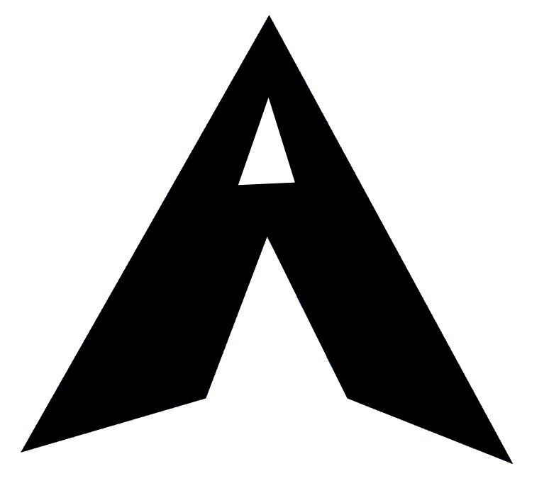

I've been interesting in typography, calligraphy & general orthography for as long as I can remember, but never truly got into it. I've always had a respect for the arts, consistently keeping an eye out for anything interesting, taking photos of what does catch my eye; but again, I never got into it. As I started to delve into east-asian languages, namely Japanese & Chinese, I very quickly found an interest in CJKV typography, which let me tell you is a whole world in and of itself. To be clear, this is mostly in reference to chinese characters (漢字) such as those in the parantheses. The degree of expressivity writing these characters involves is just beyond me, it's really brought the art of typography & calligraphy into a world I can grasp & understand. I started to collect CJKV fonts to find the right one for computer usage (which ended up being a 仿宋體 one, but I digress), which then eventually led to me collecting fonts of scripts around the world. It was at this time I got into neography, living and breathing writing systems and their beauty in all ways possible by joining subreddits, discord servers and groups regarding typography. Naturally, being around so many people passionate about typography and making their own fonts, I was motivated to do the same, and alas, here we are.
After research and many questions asked, I ended up trying to start off with FontForge, a native linux & open-source app made by the community (my favourite). The first thing I did was read the FontForge book in order to get an idea of what I'm getting myself into, although I knew there was a lot that went into making a font, the sheer amount of factors that influence the look & feel of a type was still quite overwhelming and daunting. I will be brief as this is all found in the FontForge book.
For firsts the construction of a glyph must be made, in other words, the skeleton of the character, this does not include any terminals or serifs. The proportion of the X-height to cap height, ascender height (the height of the ascenders, such as those in the lower-case letters b, h, l & f), descender depth (akin to ascender height except for descenders, such as those found in the lower-case letters y, p & q), width, height, slant, contrast (variablity in stroke thickness), angle of contrast, weight distribution, joins, bowls, speed, regularity and so so much more. The idea to trust your eyes is said very often throughout the whole book, I think they might be trying to say something. I suppose sometimes it's better to not be mathematically consistent but rather do what looks nicer and more pleasant according to one's eyes.
I will be using git to manage everything as it's what I use for everything and I have an unhealthy desire to gitise everything. As for FontForge, getting it to run was surprisingly not very straightforward, for whatever reason it was trying to open it's default hotkeys & resources from /share, whilst they are actually found in /usr/share, returning the following errors:
Failed to open hotkey definition file: /share/fontforge/hotkeys/default
Failed to open resource file: /share/fontforge/pixmaps/resources
As a temporary solution I created a symlink using the following command:
$ ln -s /usr/share /share
L
The font I would like to go for will take inspiration from 15th century renaissance humanist serif fonts whilst staying contemporary & introducing calligraphic nuances. I have no doubt this will change over time and is likely quite ambitious, but gotta dream big right? To start off I'll work solely on a regular weighted font with no italics nor bold variants. Eventually I would like to work on numerous weights and styles depending on whether or not I stay motivated. For the time being I will work on basic latin support, including numbers & most commonly used punctuation and miscellaneous symbols. I will then move on to supporting more languages using the latin alphabet (prioritising Maltese, French & Italian in that order as those are the most relevant to me). If time & motivation allow it I'd like to support everything expected from a full coverage latin font, including Vietnamese (yes). For now I will just mess around and get a hang of it, maybe I won't even enjoy the process and just stop right after this first post, who knows?
">I unsurprisingly decided to start off with the majuscule A, it started off quite funnily as I have no experience whatsoever with vector graphics, so I ended up with the monstrosity in the following image after 20 minutes of playing around with the tools. This seems to take some getting used to, instant newfound respect for vector artists but I'm sure once I train a bit I'll improve!
After a solid 45 minutes of actually trying to make something I ended up with something I can actually be quite proud of, still and all even an untrained person such as myself can point out the many many issues and inconsistencies, but I am overall happy with what I made. I will continue to tinker with it over the course of this venture but will move on to some other letters for the time being to try out some different shapes!